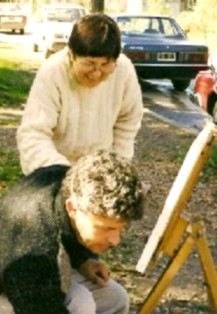
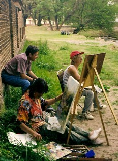
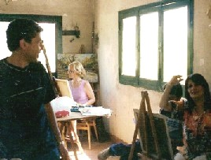
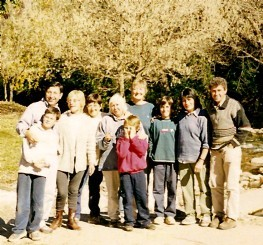

Taller de pintura "Sereno"
"Lo sereno, El lago"(1)
"Lo sereno significa alegría"...
"Lagos que descansan el uno sobre el otro:
la imagen de Lo Sereno. Así se junta el noble con sus amigos para el
coloquio y la ejercitación"...
"Es favorable la perseverancia"...
 |
Este grupo nace al impulso de varias personas deseosas
de plasmar en
Pero las dotes personales, la inspiración y las
ganas, no bastan para transformar los sentimientos en una pintura y
más aún, en una Y para eso hace falta un profesor.... |
Rosa Sáez, gran impulsora de esta experiencia
nos habló de Néstor Verón, paisajista reconocido en el
medio,
y luego de algunas gestiones comenzamos a reunirnos, a partir del año
1998.
La consigna que nos une es el paisaje, y el método, cuando el clima lo permite, la pintura al aire libre.
Lo que comenzó hace unos años como un Taller
en el que uno enseñaba El grupo se reúne una vez por semana en Unquillo
y actualmente esta conformado por Néstor Verón, quien |
 |
Rosa Sáez, Marta Rosso, Gladys Vélez,
María Pombo, Minerva Inwinkelried, Susana Fontana,
Graciela M.Casartelli, José Ochoa, Carlos García y Adalberto Abaca.
En este momento funcionamos con un número
estricto de participantes, en virtud del espacio que
disponemos y los tiempos y modalidades del Profesor, ya que prefiere brindarnos
su dedicación y una
enseñanza personalizada, mientras el "aprender", se transforma
en un acto serio y lleno de sentido.
 |
A medida que uno va creciendo en su faz artística,
al transcurrir |
"Desde entonces, al ver que mi intento fracasaba
en pinceladas poco felices, comencé a ser más dócil y
humilde, así como a dar cauce al otro yo, ese interior que ve y siente
y deja de lado la lógica racional,
para dar cabida a sensaciones e impulsos, valorando igualmente, lo que no se
limita a una dimensión
materialista de los objetos; sino que vivencia cuántas impresiones ellos
provocan, mucho más
allá de los objetos mismos."
Cerramos con palabras de una
integrante, Marta Rosso (81 años) que se expresa de esta manera: "¿Qué fue y es para mí el Taller de Pintura?: Ha sido y es la luz que iluminó mi camino, me dio fuerzas para luchar y vivir. Me integré a un grupo humano de compañerismo y armonía, que con el tiempo se convirtió en amistad. Hoy me siento feliz y doy gracias a Dios porque se pudo realizar mi sueño de pintar, de reflejar en cada cuadro cuánta belleza existe en la naturaleza. Siempre bajo la mirada, la observación y la corrección de Néstor, nuestro Profesor". |
 |
Nota:
Cada mes, un integrante hablará de
sus sentires con relación a la pintura y exhibirá sus obras en
el espacio, que
creamos a este fin y que se actualizará constantemente.
(1)I Ching. El Libro de las Mutaciones. Versión del chino al alemán por Richard Wilhelm.Prólogos de C.G.Jung, R. y H.Wilhelm. Ed. Sudamericana1975.